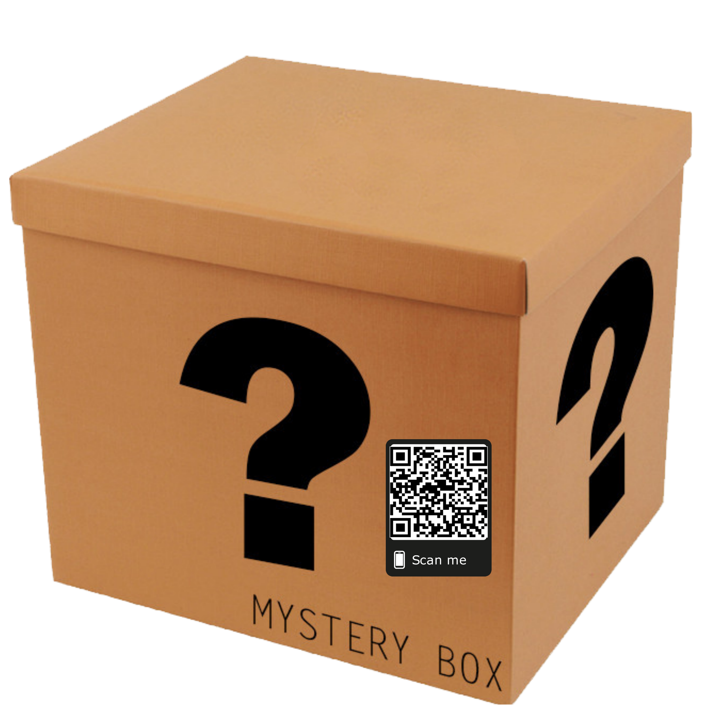

<ion-header>
  <ion-toolbar *ngIf="move != null">
    <ion-buttons slot="start">
      <ion-back-button></ion-back-button>
    </ion-buttons>
    <ion-buttons *ngIf="box && box.length != 0" slot="primary">
      <ion-button (click)='printContent()'>
        <ion-icon slot="icon-only" name="print-outline"></ion-icon>
      </ion-button>
    </ion-buttons>
  </ion-toolbar>
</ion-header>

<ion-content>

  <ion-list>
    <ion-grid id='allBox' hidden>
      <ion-row>
        <ion-col col-3 *ngFor='let box of boxes'>
          
        </ion-col>
      </ion-row>
    </ion-grid>
    <section *ngFor="let box of boxes; let i = index">
      <ion-card (click)="openActionSheet(box, i)">
        <ion-card-header>
          <ion-card-title>{{box.name}}</ion-card-title>
          <ion-card-subtitle *ngIf="box.content.length==1">{{box.content.length}} item</ion-card-subtitle>
          <ion-card-subtitle *ngIf="box.content.length>1">{{box.content.length}} items</ion-card-subtitle>
        </ion-card-header>
        
        
      </ion-card>
    </section>
  </ion-list>

  <ion-fab vertical="bottom" horizontal="end" slot="fixed">
    <ion-fab-button size="small" (click)="addNewBox()">
      <ion-icon name="add-circle-outline"></ion-icon>
    </ion-fab-button>
  </ion-fab>

</ion-content>